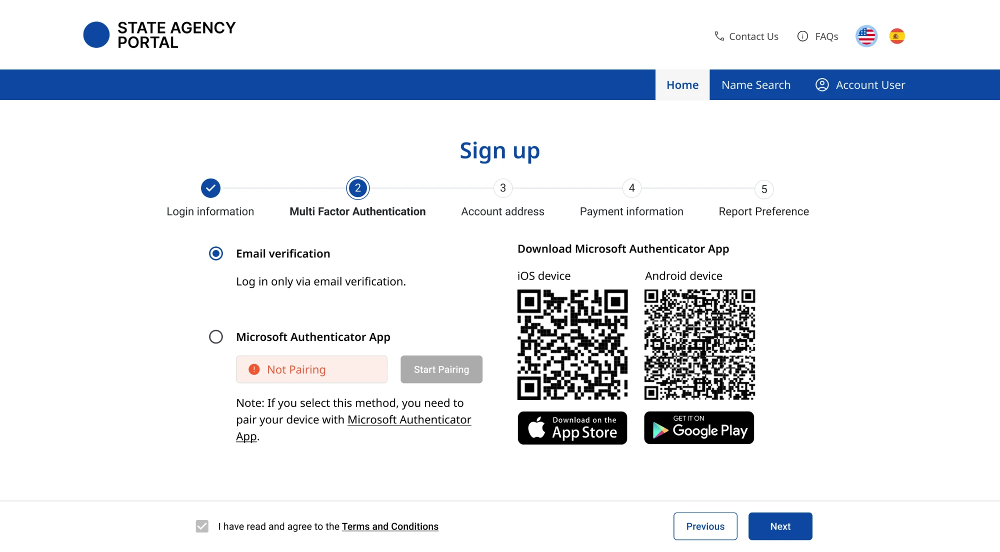
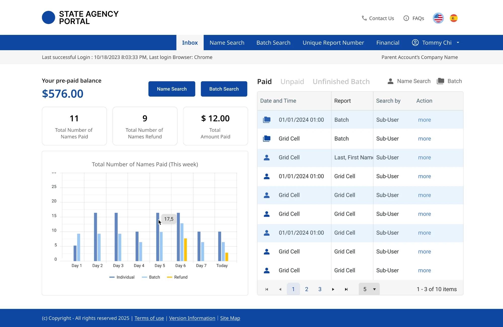
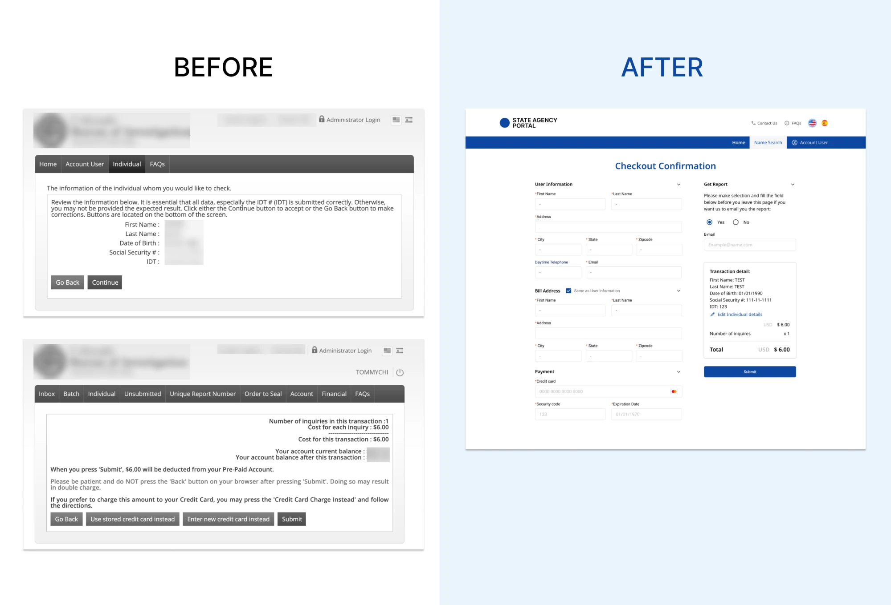
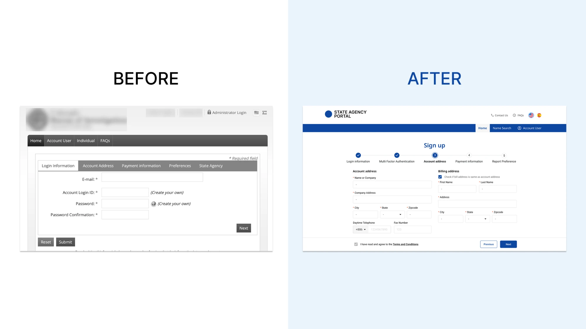
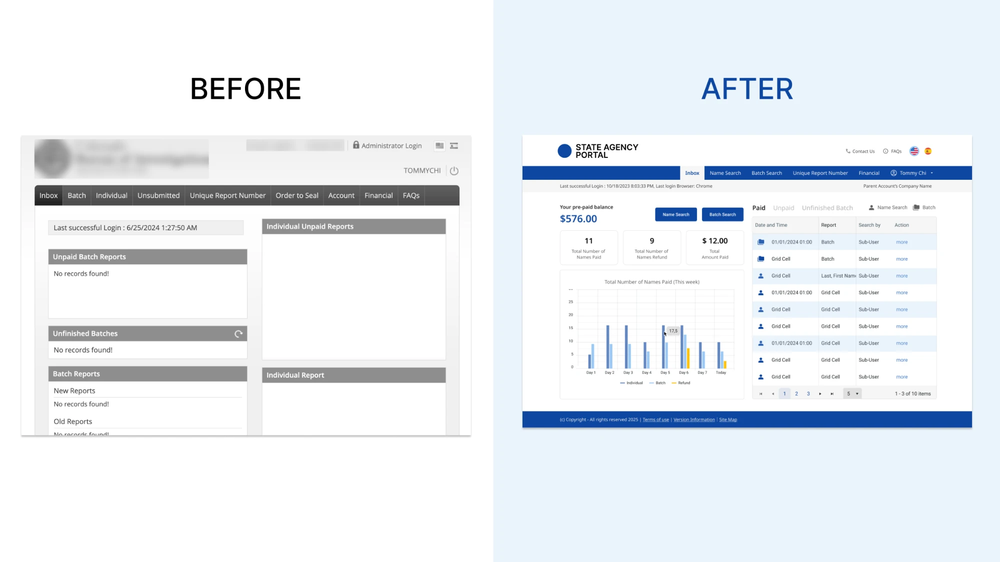
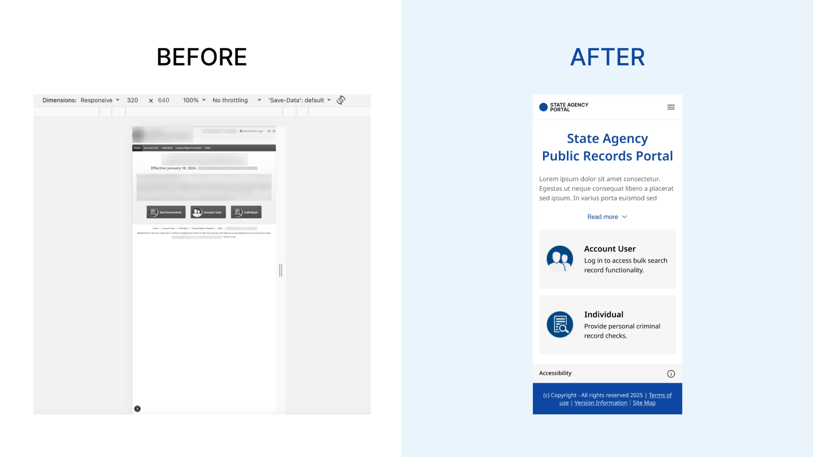

U.S. State Government Project · Public Records Portal · 2024–2025
Modernizing a State Records Portal: WCAG 2.2 AA and Checkout from 6 Pages to 3

01 Overview
A US state government's portal where the public and registered organisations search a person's criminal history record, pay, and download the report. The old system had to meet WCAG 2.2 AA. Compliance was the brief; I proposed also fixing how hard its main tasks were to use. I redesigned the core flows, and the release passed the client's WCAG 2.2 AA acceptance.
Pages from entering a person's details to downloading the report.
Passed the client's acceptance review.
3 weeks on past projects without a component library → 1 week here.
- My role
- Product Designer & Taiwan-side PM
Audited the legacy system, redesigned flows and layouts, and tracked development through testing and delivery. - Timeline
- September 2024 – January 2025
Design and development. Launched in 2026 on the client's schedule. - Team
- Project managers (2) · Engineers (3) · Product designer (1)
02 Challenge
The client asked for compliance. I proposed making the portal easier to use as well. A long-standing client's old portal had to meet an accessibility law. The public uses it to run checks on a person by name and identity details, account holders run batch searches, and agency staff manage it.
Meet WCAG 2.2 AA
The client's brief, required by law. The legacy components, colours and layouts did not meet it.
Improve the overall UX
Not in the brief; I proposed it. The old system's three main tasks were hard to use: searching and paying, signing up, and the account dashboard.
03 Solution



04 Research
For the UX, I used the old portal the way its users do. On the old system's staging, I ran each main task end to end: searching for a person and paying for the report, signing up for an account, and working from the account dashboard. I took a screenshot of every screen along the way and marked where a task slowed down, repeated itself or failed without explanation.
For accessibility, I checked the old screens against the standard. I scanned them with Lighthouse and Accessibility Insights, checked by hand the WCAG 2.2 AA criteria those tools can't test, and opened them on a phone, where they had no responsive layout.
The walkthrough turned up more than four problems. I kept the ones on the tasks the public and account holders do most, on screens the compliance work was going to change anyway. Issues in the admin tools stayed out: this release kept admin to simple management.
What I found
People confirmed the same details twice before they could pay.
Six pages from a person's details to the report. The confirmation page repeated what people had just typed.
Solution detailsSign-up only said something was wrong at the very end.
People could jump between tabs freely. Missing fields showed up on Submit, without saying which tab or field.
Solution detailsOne kind of record was split across separate panels.
Balance, reports and batches all sat on one dashboard, with no clear order to the information.
Solution detailsThe screens failed AA and didn't fit phones.
Legacy components and colours failed WCAG 2.2 AA, and the layouts didn't adapt to phone screens.
Solution details05 Design
Insight 01 · People confirmed the same details twice before they could payConfirm and pay on one checkout page
- What I saw
- Six pages from a person's details to the report, with a confirmation page that repeated the details.
- What I changed
- Three pages: details, one checkout page, download. On checkout, the person's details sit beside the payment form, the amount fills in automatically, and sending the result is optional on the same page.
- Why this way
- With the details right next to payment, people check who they're paying for while they pay. A separate confirmation page no longer adds anything.
- Trade-off
- Removing a confirmation step from a paid search. I agreed it with my manager before designing it out.

Insight 02 · Sign-up only said something was wrong at the very endCheck each sign-up step before Next, not at the end
- What I saw
- Errors only appeared on submit, and people had to hunt for the tab that caused them.
- What I changed
- Five linear steps with progress shown, and each step checks its required fields before Next. Multi-factor setup comes right after login details.
- Why this way
- Steps guide people in order and show what's still left to fill in. An error shows up on the step that caused it, not at the end.
- Trade-off
- Email is the default verification method and a device is optional. My manager made that call: many existing account holders had no device set up or weren't used to binding one.

Insight 03 · One kind of record was split across separate panelsPut every record in one list, marked by status
- What I saw
- Balance, reports and batches all sat on one page with no clear order.
- What I changed
- A chart of the past week's searches and refunds, and one list for every search record, marked by status: paid, unpaid or unfinished. The balance sits top left.
- Why this way
- The records were all the same kind of data, split across separate panels. One list with status labels puts them in one place, and the chart shows the week at a glance.

Insight 04 · The screens failed AA and didn't fit phonesMeet AA with Telerik's components, then design the layouts for phones
- What I saw
- Legacy components and colours failed WCAG 2.2 AA, and the layouts didn't adapt to phones, on a stack that was already set.
- What I changed
- Swap in Telerik's components, which already meet AA, then design the layouts, colours and how each screen displays on a phone.
- Why this way
- The components came accessible. Contrast, hierarchy and the mobile layout still had to be designed.
- Trade-off
- As PM I put flows and functions meeting the requirements first. Some pixel-level details, like alignment, shipped looser than the design.

06 Validation
Accessibility, checked three ways
Lighthouse and Accessibility Insights flagged automated issues during the build. I checked the criteria tools can't test by hand. The client then ran its WCAG 2.2 AA acceptance, and it passed.
No usability test
No existing users tried the new screens before launch. Anything that only shows up in everyday use could surface only after release.
What that gap missed
The old components couldn't stay, so we replaced them first. I didn't account for how people were used to operating specific ones. The date-of-birth field moved to Telerik's date picker, which already met WCAG 2.2 AA.
After launch, the client told us entering a date of birth with it was hard to use. We changed the field to plain typed input. The component passed every accessibility check and still didn't fit the way people entered that field.
07 Outcome
The portal launched in 2026, mostly as designed. Some styling details came out looser than the design. The only interface issue raised after launch was the date-of-birth field.
- Search and pay
- 6 → 3 pages from entering a person's details to downloading the report.
- Sign-up
- Errors show on the step that caused them, not after submitting the whole form.
- Dashboard
- One list for every search record, marked by status, with a chart of the past week.
- Accessibility
- Passed the client's WCAG 2.2 AA acceptance, the requirement in the brief.
- Delivery
- −67% front-end build time for the login module: 1 week, against 3 weeks on past projects that had no component library.
Reflection
A compliant component can still break a habit. People who had used the old system for years had a way of filling in each field. Swapping in a library default fixed accessibility and, for the date of birth, broke that habit.
My walkthrough showed me how the old system behaved, not how its regular users had learned to work with it. Acceptance confirmed the release met the requirements, not that it fit those habits.
Next time, I'll run a usability test before launch. When I replace a legacy component, I'll weigh how people used the old one alongside the standard, and put the changed screens in front of a few existing users. That is the step that could have caught the date-of-birth issue before release.